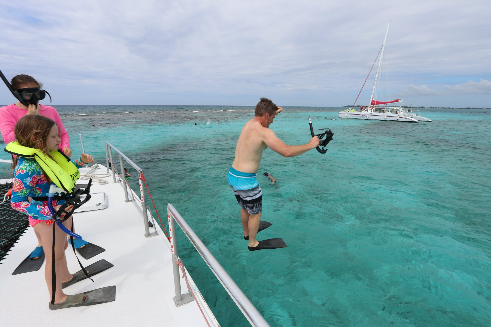
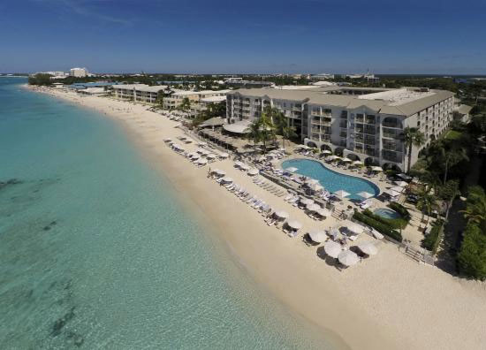
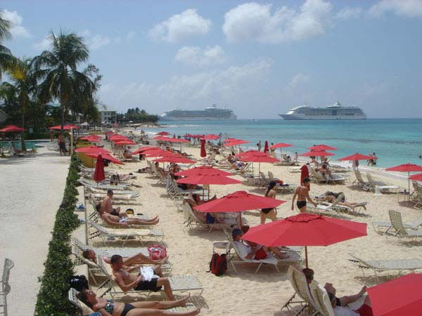

Cayman Island

A popular family friendly beach in West Bay offering street parking, bathroom and changing facilities, beach cabana and plenty of shade. The beach is also adjacent to the West Bay Dock where dive companies launch from and Alfresco Restaurant for nearby dining. Located at the northern tip of West Bay Road, just before the NW Point Road turn off.

A popular and wide beach. There is a children’s play area, cabanas, restrooms, showers and during high season 13 playground-style inflatable floating trampolines, see-saws, slides, climbing walls and a monster iceberg that children love! The Public Beach is located by Calico Jacks on West Bay Road.
The best snorkeling on Seven Mile Beach with plenty of shade plus parking facilities. Located at the north end of Seven Mile Beach. Look for the cemetery across from the fire station and you will find Cemetery Beach.
The best snorkeling on Seven Mile Beach with plenty of shade plus parking facilities. Located at the north end of Seven Mile Beach. Look for the cemetery across from the fire station and you will find Cemetery Beach.
A popular and wide beach. There is a children's play area, cabanas, restrooms, showers and during high season 13 playground-style inflatable floating trampolines, see-saws, slides, climbing walls and a monster iceberg that children love! The Public Beach is located by Calico Jacks on West Bay Road.
Ample parking and a wide stretch of white sand and crystal clear blue water makes Governor's Beach a popular beach for residents and tourists. One of the better snorkeling sites on Seven Mile Beach with a short swim out to the shallow reef. Governor's Beach is located just north of the Governor's Residence on West Bay Road.

A small but picturesque pocket of sand in the mainly ironshore coastline. Easy snorkelling, lots of trees, picnic tables, restroom facilities and a freshwater shower. Parking area across the road.
A small and often deserted south–facing beach with cliffs at either end and a dock in the middle. It's a great place to spot elusive turtles who usually come into the shallow waters to feed on the sea grass between 4-6pm. Sitting at the end of the dock with a drink in hand, watching the turtles pop their heads up for air as the sun goes down is a fantastic experience! No facilities. Beware of strong currents.
sandy beach in Bodden Town with cabanas, a children's play area and restroom facilities. There is a fish fry available at the Grape Tree beachside café. Walk west for good beachcombing.
Various deserted long sandy beaches can be found in the eastern districts. One favourite spot is Barefoot Beach (the Reef Resort is about 2.3 miles away). Expect these beaches to be strewn with washed-up seagrass and quite a bit of flotsam. They aren't the tidiest of beaches but they have great snorkelling. There is a lovely sandy beach at the Morritt's Tortuga resort with a bar in the middle of the dock and a virtual aquarium of unafraid fish below. East End Public Beach has a dock, restroom facilities and cabanas for shade.